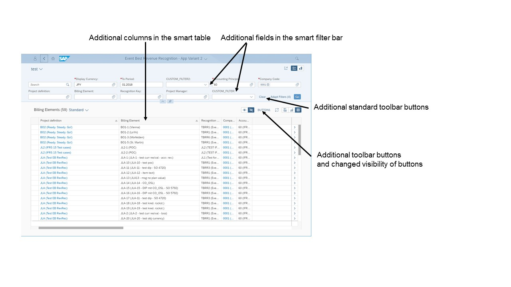
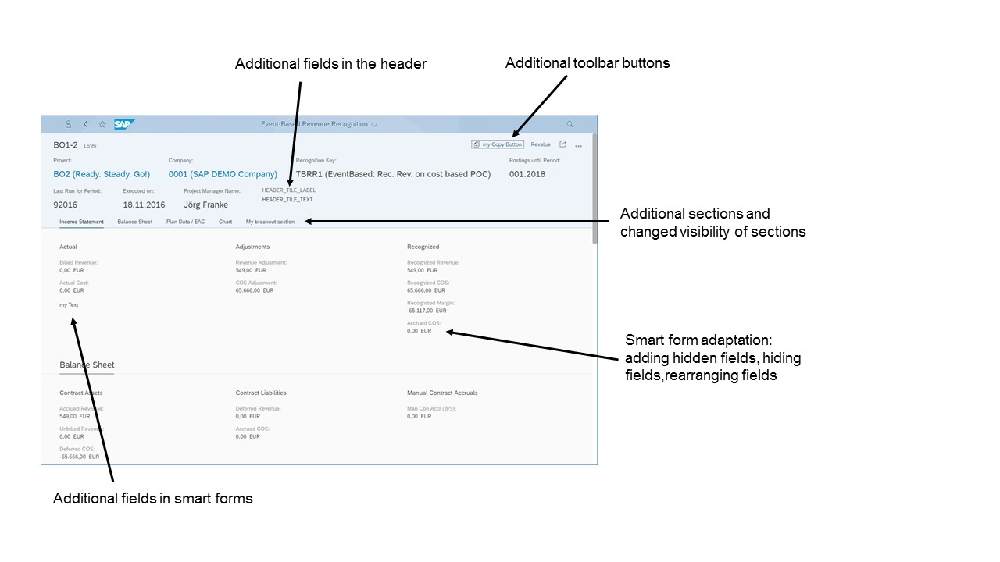

Extending Delivered Apps Using Adaptation Extensions
You can extend a delivered SAP Fiori elements-based apps using the SAPUI5 Visual Editor.
Context
You can implement extensibility functions as part of a UI adaptation project, using the SAPUI5 Visual Editor. The adaptation project references the applications delivered by SAP as base or parent applications.
-
List report and analytical list page
-
Add additional fields to the smart filter bar
-
Add additional columns in tables
-
Add additional table toolbar buttons and extension controller logic
-
Override extensibility functions;
-
onInitSmartFilterBar
-
provideExtensionAppStateData
-
restoreExtensionAppStateData
-
ensureFieldsForSelect
-
addFilters
-
Adaptation Extension Options in the List Report -
-
Object page
-
Global actions
-
Additional sections
-
Add additional fields to the header facet
-
Add additional fields and field groups to forms
-
Override extensibility functions;
-
provideExtensionStateData
-
restoreExtensionStateData
-
ensureFieldsForSelect
-
addFilters
-
Adaptation Extension Options in the Object Page -
In SAP Web IDE, perform these steps:
Procedure
-
Choose
 File
File  New Adaptation Project
New Adaptation Project .
.
-
Right-click your adaptation project and choose SAPUI5 Visual
Editor.
The system starts the editor. You can make your adaptations on the Edit tab page. For an example, see Adaptation Extension Example: Adding a Button to the Table Toolbar in the List Report.
For information about adapting the UI in the SAP Web IDE, choose
Help Documentation Developing Developing Web Applications SAPUI5 Visual Editor.